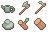
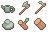

While pixel art does have a large variety of softwares, such as aseprite, photoshop, GIMP, pixel studio, and even MS paint, you dont exactly need the best of the best when you're starting out. So if you want an easy start, you can use pixilart.com for example, which is a browser based software. It already allows for custom resolutions and colors, and as well as brushes and other basic features. This will allow you to get comfortable with the basics before you invest in something that costs money.
To start out, let's try and draw a custom character of our own, the first step is to figure out the basic concept of what you want them to look like, height, build, style, hair, any special quirks etc. These will help you make a character that is unique and stands out. Things that indicate their personality or life are also huge bonuses. As an example, a your character may be an EMT or other medical practitioner and therefore carry a first aid kit with them at all times. Thats just one idea but you can do whatever you like. You can sketch out your ideas on a piece of paper or anything else so you don't forget.

There's a lot of different styles to go for when creating your character in pixel art form, you can go for a more Chibi style with fewer pixels, or choose to have more detail with a higher resolution. What you choose is up to personal taste and there is no right or wrong way to go about it. You can mess around with poses, style, etc and see what works for you.
 

You've successfully started on your path to pixel art greatness!
You can not see me